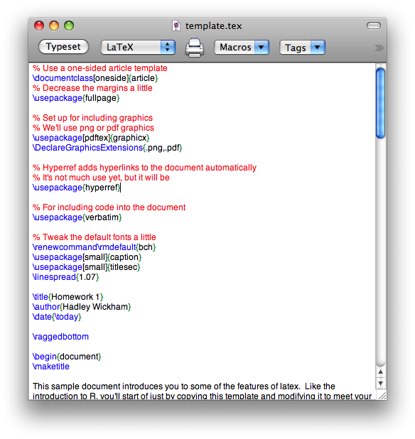
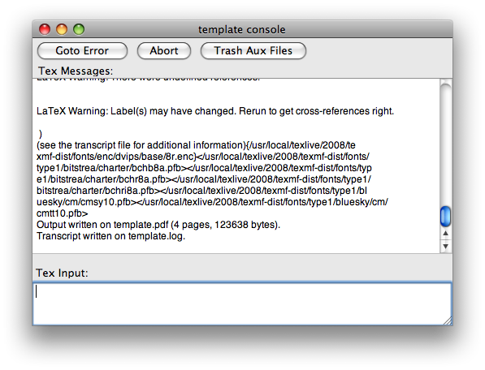
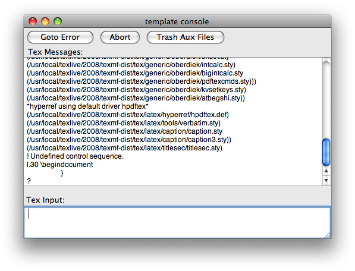

Download and install mactex (1.2 gig).
Open a latex file by double-clicking it in the finder. The texshop editor, shown below, will pop up. Notice the syntax highlighting shows comments in red, and latex commands in blue.

Click the typeset button, or press ⌘-T. An error console, as shown below, will pop up and display progress.

If there is an error, the console will look something like this:

Note the line that starts l.30 \begindocument. This is telling you that latex thinks the problem occured on line 30 (although note that's not always correct about where the error occurs). You can click the "goto error" button to jump to this line in the editor.
The preview window will open automatically if compilation was successful.
Tip: you can ⌘-click text in preview to jump to the code in the editor, or ⌘-click text in the editor to jump to the results in the preview.
Learn to use texshop more effectively by reading the help files, particularly "First Steps with TeXshop", and running the demos.